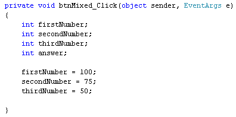

Mixing Subtraction and Additionin C#
<< Continues from the previous lesson
You can mix subtraction and addition. The process is quite straightforward. What we'll do next is to add two numbers together, and then subtract a third number from the total.
Add another button to your form. Set the following properties for it:
Name: btnMixed
Size: 100, 30
Text: Add and Subtract
(If you need to make your Form bigger, click on the form to select it. Then change the Size property in the Properties Window.)
Double click your button to get at the code. We'll need four integer variables for this. So set up the following:
int firstNumber;
int secondNumber;
int thirdNumber;
int answer;
To place values in the variables, add the following three lines:
firstNumber = 100;
secondNumber = 75;
thirdNumber = 50;
Your coding window will then look like this:

To add the first number to the second number, and then place the result in the variable we've called answer, add the following line to your code:
answer = firstNumber + secondNumber;
Display the answer in a message box by adding this line:
MessageBox.Show( answer.ToString( ) );
When you run the programme and click your button, you should see the message box display an answer of 175.
Stop the programme and return to your code.
We now want to subtract the third number from the first two. So change this line:
answer = firstNumber + secondNumber;
to this:
answer = firstNumber + secondNumber - thirdNumber;
When C# sees all these variables after the equals sign, it will try to calculate using the numbers you've stored in the variables. Usually, it will calculate from left to right. So this bit gets done first:
firstNumber + secondNumber
When C# finishes adding the first two numbers, it will then deduct the value in thirdNumber. The answer is then stored in the variable to the left of the equals sign.
Run your programme. When the button is clicked, the message box will display
an answer of 125.
So mixing addition and subtraction is fairly straightfoward - just use the + and - symbols. However, there can be problems! In the next part, you'll about something called Operator Precedence.